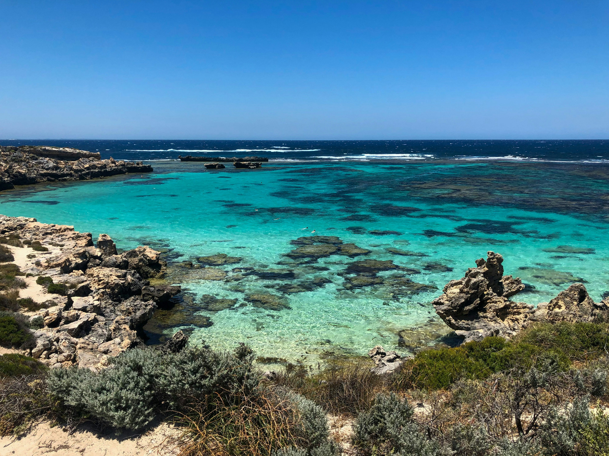
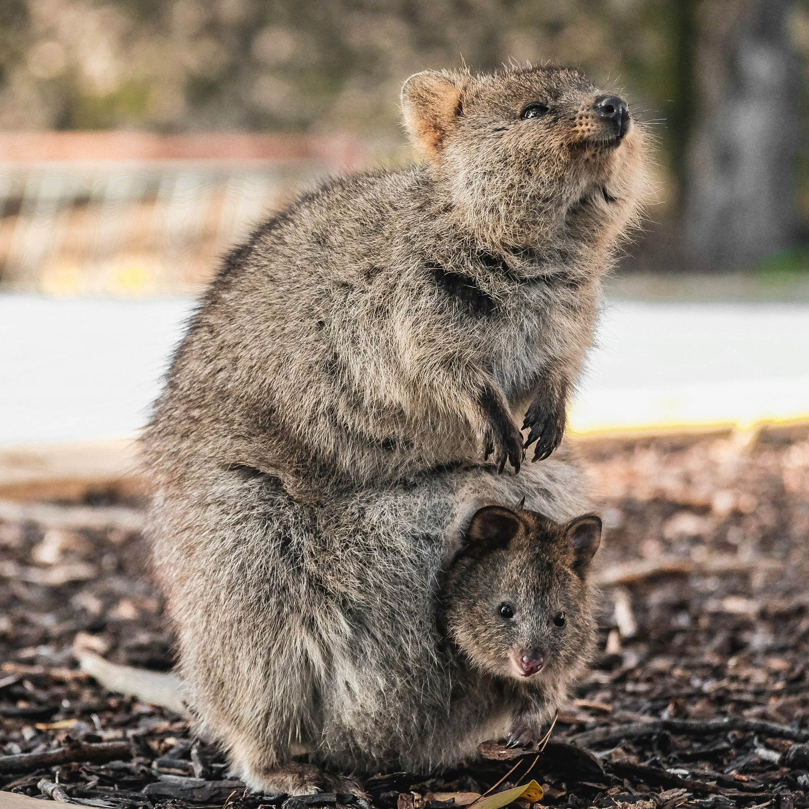

Blue skies, sparkling water,
amazing food and a little
quokka charm — Perth is
ready to welcome you.
Between sessions, enjoy
river views, sunsets,
beaches and the relaxed
Western Australian vibe
while connecting with the
global lipidomics
community.


We are delighted to announce the first joint conference of the Australian Lipid Meeting 7 (ALS) and the 5th International Lipidomics Society (iLS) Conference, taking place October 18–21, 2026 at the Novotel Perth Langley, in Perth, Western Australia.
This special event unites two major gatherings in lipid research, bringing together researchers, scientists, clinicians and industry leaders from around the world to share discoveries, promote collaborations and shape the future of lipidomics.
The program will feature plenary and keynote speakers, oral and poster presentations and networking sessions; all designed to encourage the exchange of ideas and promote interdisciplinary collaboration.
Whether you are a biochemist, clinician, analytical chemist, nutritionist or cell biologist, this conference will provide a forum to engage with the global lipid research community.
We look forward to welcoming you to sunny Perth in 2026 for this exciting joint celebration of lipidomics!